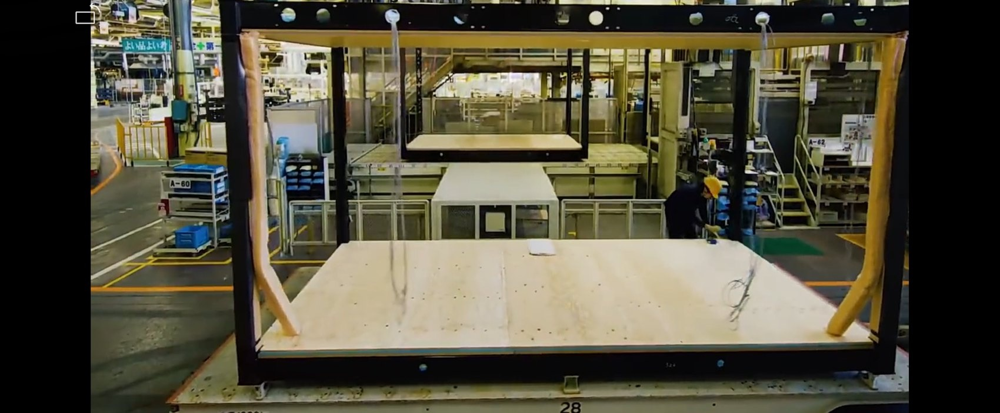
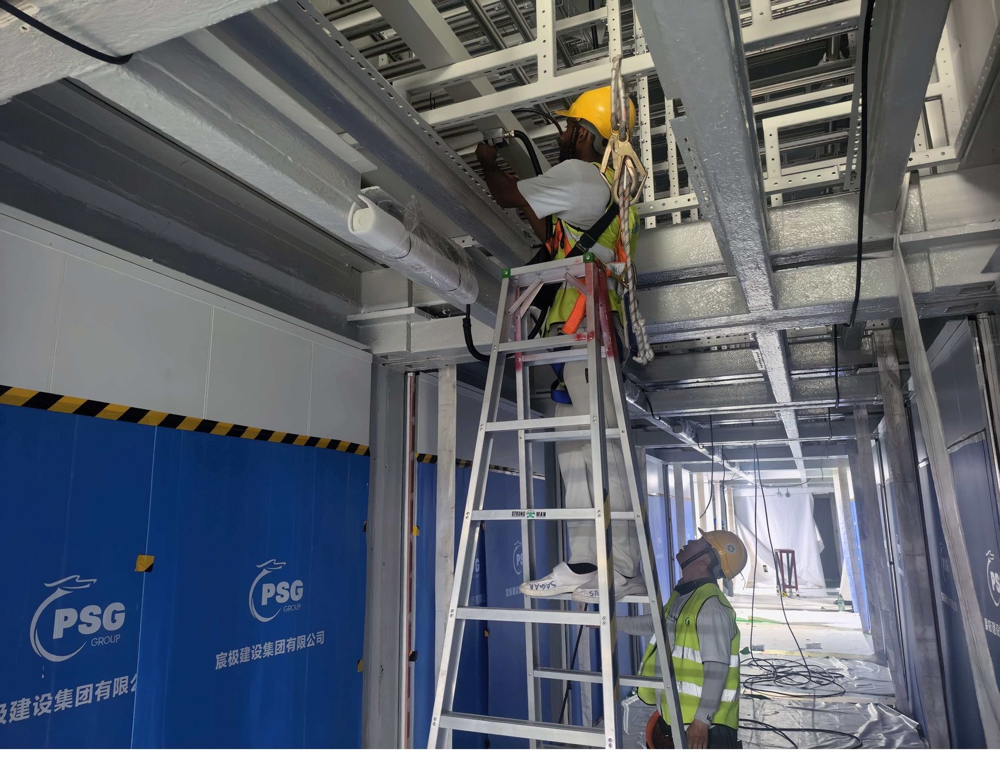
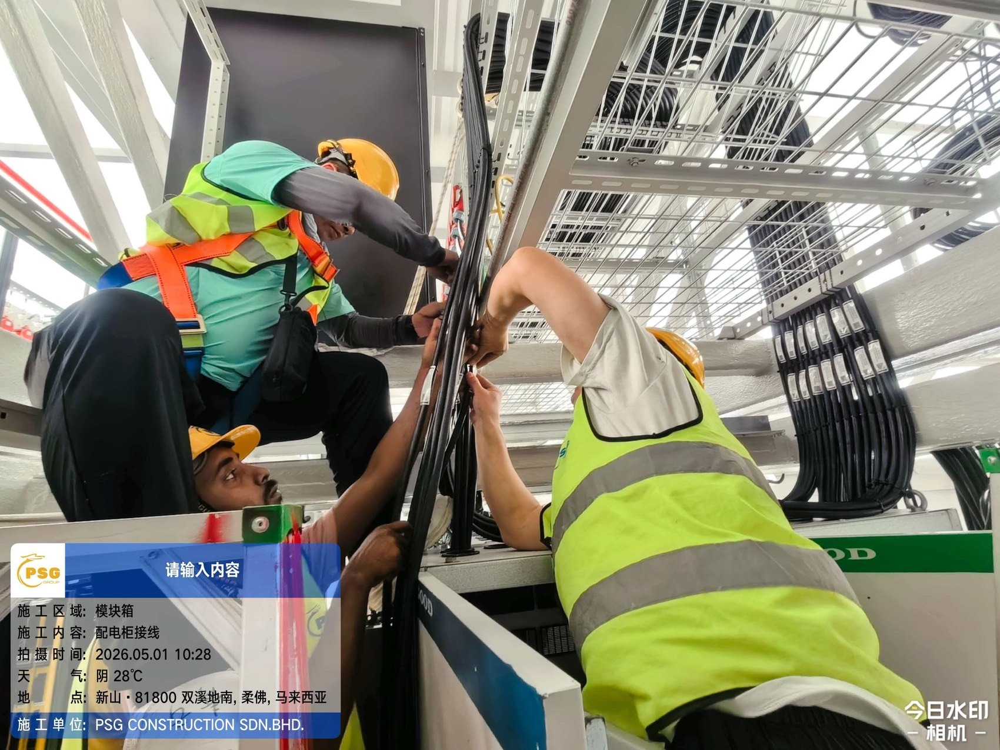
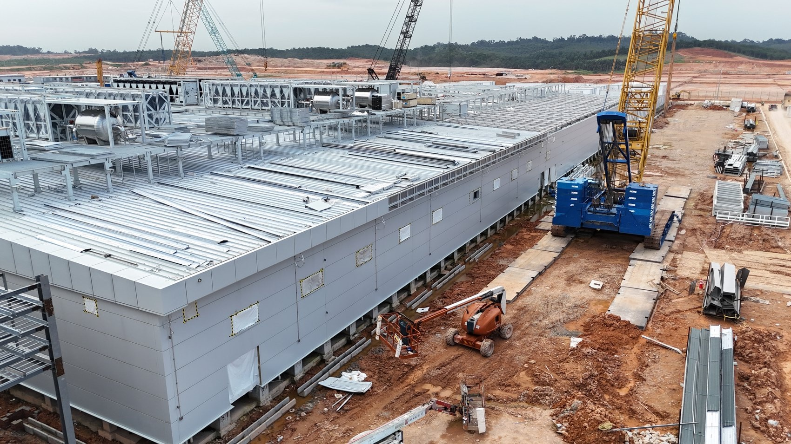

The modular data centre has moved, in roughly five years, from an edge-computing curiosity to the default delivery method for multi-hundred-megawatt AI campuses. The market reflects it: modular data centre revenues stood at US$31.24 billion in 2025, are put at US$35.44 billion in 2026, and are forecast to reach US$116.53 billion by 2034 — a compound annual growth rate of 16.0% over 2026–2034, or 15.8% measured from the 2025 base. North America alone accounted for 37.04% — some US$11.57 billion — of the 2025 total.1
That growth is not driven by cost. Factory integration and proprietary power and cooling assemblies carry a reported premium of 20–30% per megawatt against conventional site-built construction. It is driven by time, by labour scarcity, and increasingly by thermal physics. When an accelerator rack draws 100–200 kW and the roadmap points at 600 kW, the cooling system stops being a service routed through a building and becomes a structural element of it. Factories build that kind of assembly better than construction sites do.
This paper is about one specific answer to that problem: the prefabricated building module — the structural bay that is the building, manufactured complete with its frame, envelope, services and cooling, then set and connected on site. It is the family that delivers gigawatt-class AI capacity, it is the family that makes stacking an architectural option rather than a container-yard expedient, and it is the family that Japanese, Australian and Southeast Asian projects are converging on. The paper sets out what it is, how it differs from steel-frame construction and from container-scale MDC, what the delivery sequence actually looks like, who builds it, and — the question that decides land economics on a constrained site — whether AI data halls made this way can be stacked two levels high. It is also the method Grid Apex has adopted for its own multi-storey AI data centre campus, and section 11 sets out why that produces a permanent Japanese building capable of housing the current and next generations of AI hardware.
01 What MDC means — and which family matters
MDC — modular data centre — denotes a data centre whose functional building blocks are manufactured, assembled, integrated and tested in a factory, then transported to site and connected together. The defining characteristic is not that the building is made of repeated parts. It is that the factory, not the site, is where integration happens.
In a conventional project, a contractor erects a structure and then installs equipment inside it: switchgear arrives, is positioned, wired, commissioned; chillers are craned onto a roof and piped; containment is built around racks. Every one of those operations happens outdoors, in sequence, subject to weather, trade availability and site congestion. In a modular project, those same operations happen on a production line under cover, in parallel with the site works, and the resulting unit is factory-acceptance-tested before it is ever loaded onto a truck.
Three families are commonly grouped under the term, and conflating them causes most of the confusion in the market.
| Type | What Ships | Typical Unit | Where it Dominates |
|---|---|---|---|
| Container-scale (ISO) | A sealed, self-contained box with IT, power and cooling inside a transport-legal envelope | 10 ft / 20 ft / 40 ft; 0.5–2 MW | Edge, rapid deployment, constrained or remote sites, phased capacity |
| Skid and room modules | Pre-integrated functional rooms — power skids, chiller plants, UPS and battery rooms, CDU plant — without the building | Plant room or “pod”; 1–5 MW | Large campuses where the building is conventional but the MEP is prefabricated |
| Prefabricated building modules | Structural bays that are the building — floor, frame, envelope and services as one manufactured element | Transport-sized structural bay, typically 3–4.5 m × 12–16 m; joined into halls of any size | Whole-campus delivery where speed, labour scarcity and density dominate |
The third family is the subject of this paper. The distinction from the first is not one of size but of structural role. A container-scale module is a piece of equipment that happens to have walls; the building, if any, goes around it. A prefabricated building module is a piece of the building: its frame is primary structure, its floor is the data hall floor, its envelope is the external wall and fire-rated line, and its roof is either the roof of the finished hall or the deck that carries the level above. That is what allows prefabricated building modules to be assembled into continuous data halls of tens of thousands of square metres, and to be stacked — neither of which a yard of shipping containers can do.
A single project frequently uses all three families. NEXTDC's S4 Sydney — a 30,743 m² facility of 350 MW across two four-storey buildings, under construction by Multiplex for mid-2027 completion — is conventionally framed but uses prefabricated mechanical plantrooms, prefabricated electrical switch rooms and prefabricated main services reticulation pathways, alongside precast lift cores, columns and façade.2 It is simultaneously the largest modular data centre project in Australia and not a “container” project at all.
02 Anatomy of a prefabricated building module
A prefabricated building module for an AI data hall is a steel-framed volumetric unit sized by what can move on the road — typically 3–4.5 m wide, 12–16 m long and 3.5–4.5 m high — and designed to be joined to its neighbours so that many modules combine into one continuous hall. The unit that ships is therefore not the unit that operates: capacity is quoted per hall or per campus, not per module, and a data hall of 2,000 m² is simply a hall built from more of them. It is best understood as four systems manufactured as one object:
- The chassis: A welded steel frame — base grillage, corner and intermediate posts, roof frame — fabricated to millimetre tolerance. It is simultaneously primary building structure, the transport frame, the equipment support and the lifting rig, and it must satisfy all of those load cases independently.
- The envelope: Insulated composite panel or rainscreen on a fire-rated substrate, with the module-to-module joint detailed as a continuous fire, air and water line. Because the joint is the one element made on site, its design governs the quality of the finished building far more than the panel specification does.
- The services layer: Containment, busway or cabling, switchboards, cooling distribution — CDUs, manifolds, primary and secondary coolant headers — fire detection and suppression, monitoring and controls, all installed and terminated at fixed interface points on the module face.
- The interface: Four families of connection cross the module boundary: power, coolant supply and return, network, and controls. These are the only genuinely site-made joints in the whole building, which is why they are engineered as repeatable quick-connect details rather than as drawn-and-measured site work.
In conventional construction the frame is a container for equipment. In prefabricated modular construction the frame is simultaneously structure, shipping crate, equipment chassis and lifting rig, and it must satisfy four load cases: in-service gravity and seismic loads, transport dynamic loads, lifting and racking loads during craneage, and stacking loads where modules are set on one another. A module designed only for the in-service case will fail on the road; a module designed only for transport cannot be stacked. The stacking case is what separates a building module from a container.
Module dimensions must be resolved against road and sea transport conditions together. Japan's general vehicle limits under the Vehicle Restriction Order (車両制限令 Art. 3) are 2.5 m width, 3.8 m height, 12.0 m length, 20 t gross, 10 t per axle and 5 t per wheel, with a 12 m minimum turning radius. Two qualifications matter. Height rises to 4.1 m on designated 高さ指定道路 and gross weight to 22–25 t on expressways and 重さ指定道路 according to axle spacing; but the 12.0 m length is measured over the tractor and trailer together and has no designated-road exemption. A 40 ft module is 12.19 m before the tractor is attached, so module transport in Japan is a permit exercise from the first drawing, under 特殊車両通行許可 or the confirmation scheme that replaced part of it in 2022, with permit ceilings for the standard exempted vehicle types running to 16.5 m and 36 t on expressways. Route and overhead clearances are verified case by case. Cross-border delivery additionally requires that vessel type, loading and discharge method, lashing and salt-spray protection be settled at the design stage, and that port transhipment, sailing schedules and the final road leg be planned as one sequence. Where a manufacturer quotes a large single figure — Daiwa House's approximately 200 m² Module DPDC — that denotes a design bay, which must be divided into several shipping pieces and mated on site.
03 How it differs from steel-frame construction
The distinction most often misunderstood is between a prefabricated modular data centre and a steel-frame building that happens to be erected quickly. Both use steel. The difference is what the steel is doing, and when the mechanical and electrical content arrives.
| Dimension | Conventional Steel Frame | Prefabricated Building Modules |
|---|---|---|
| Sequence | Structure first, then fit-out. Trades follow one another on site. | Structure and fit-out happen together in the factory; site works run in parallel. |
| Where integration occurs | On site, outdoors, in sequence. | On a production line, indoors, repeatably. |
| What the steel does | Carries the building. Equipment is installed into the volume it encloses. | Carries the building and is the transport frame, equipment chassis, lifting interface and stacking load path. |
| Testing | Commissioned on site after installation. Defects found late, at maximum cost. | Factory acceptance tested before shipment. Defects found in the factory. |
| Site labour | High and sustained — an acute constraint in Japan, Korea, Australia, Europe and the US. | Sharply reduced; site work is foundations, craneage, module-to-module joints and connection. |
| Tolerance regime | Construction tolerances, measured in centimetres. | Manufacturing tolerances, measured in millimetres — necessary for modules to mate. |
| Change flexibility | High until late. Design can evolve during construction. | Structure and principal interfaces frozen early; internal layout can still be assessed for adjustment. |
| Cost | Baseline. | Reported 20–30% premium per MW; paid for in schedule and certainty. |
In a steel-frame building the critical path runs through the structure: nothing else can start until the frame is up and clad. In a prefabricated modular building the critical path runs through the factory line and the foundations, in parallel, and the two converge at the crane. That is the whole of the schedule advantage, and it is also the whole of the risk: a module that arrives before its plinth is ready, or a plinth built to construction rather than manufacturing tolerance, destroys the benefit immediately.
04 From factory line to live hall: the delivery sequence
The plates that follow document the sequence in a working prefabricated-module data centre programme, from the bare chassis on a factory line to a liquid-cooled hall in service. They are reproduced here because the argument of this paper — that integration has moved from the site to the factory, and that this is what makes stacking tractable — is easier to see than to assert. Read them as five stages: manufacture, integration, assembly, plant, operation.








Between Plate 1 and Plate 5, the proportion of the finished building produced under factory conditions is close to complete: structure, envelope, containment, switchboards, coolant headers and controls all arrive as one tested object. Site work reduces to four operations — foundations and plinths set to manufacturing tolerance, craneage and setting, connection of the four service families that cross the module boundary, and integrated testing, which becomes a verification exercise rather than a commissioning one because each unit was already proven.
The commercial consequence follows directly. Capacity arrives in module-sized quanta of 1–2 MW rather than in single 20–50 MW building steps, which lets construction be financed against a leasing curve instead of ahead of one.
05 The container-scale case, and why it is different
Container-scale MDC is the most constrained variant and, for that reason, the most instructive contrast. Its logic runs as follows:
The envelope is set jointly by sea and road transport conditions. A container-scale module has to satisfy the ISO box format, ship loading, port lifting and the final road leg at once, and its internal layout, aisles and service clearances are constrained accordingly. The 40 ft format is convenient precisely because it connects sea and land carriage, but adopting it does not mean every leg of the journey is permit-free.
The difference from the prefabricated building module is architectural, and it is decisive at scale:
A container is a machine placed on a site: it carries only itself, its walls are not a building line, and a yard of them does not become a hall. A prefabricated building module is a piece of a building: it is designed for module-to-module joints, for continuous fire and acoustic lines, for a shared roof and plant deck, and for superimposed load from a module above. That is why the container is the right answer for 2 MW at the edge and the wrong answer for 80 MW on a campus — and why every gigawatt-class programme in this paper's section 8 uses building modules, prefabricated plantrooms, or both.
06 Technological feasibility: what has been proven
Three questions determine whether prefabricated modular delivery is technically viable for AI workloads rather than merely for traditional colocation: can it carry the thermal load, can it satisfy structural and life-safety codes, and can it be certified repeatably.
Thermal Feasibility
This is settled. Direct-to-chip cold plates, rear-door heat exchangers and single-phase immersion all now ship as sealed factory-integrated units capable of carrying current 700 W accelerators with roadmap headroom toward 1,000 W devices. Vendor claims of liquid-cooling-enabled PUE approaching 1.15 are credible in principle, though they should be read as design-point rather than annualised figures. The significant point is architectural, and Plates 4 and 8 make it: because the coolant loop is assembled and pressure-tested on a jig in a factory, prefabricated construction is arguably better suited to liquid cooling than site-built construction, where thousands of field-made joints in a closed loop represent a serious leak-risk surface.
Structural and Seismic Feasibility
Here feasibility is jurisdiction-dependent, and Japan is the strictest case in the world. Japanese data centre practice targets seismic performance at importance factor 1.5. It is worth being precise about the status of that figure: 重要度係数 does not appear in the Building Standards Act, and a privately owned data centre can lawfully obtain building confirmation at 1.0. The 1.5 / 1.25 / 1.0 ladder is the Ⅲ・Ⅱ・Ⅰ classification of MLIT's 官庁施設の総合耐震・対津波計画基準, a standard whose own scope is government facilities; it reaches data centres because JDCC's facility standard adopts 耐震性能Ⅰ類相当 — the 1.5 grade — as its Tier 4 criterion, after which tenants and developers specify it contractually. Importance factor 1.5 is therefore a de facto market standard enforced through tenant specification and tier certification. What is statutory is the verification route: building confirmation plus structural calculation conformity review (構造計算適合性判定, “tekihan”) under Article 6-3, carried out by the prefectural governor or a designated agency. Two Japanese products demonstrate that prefabricated building modules clear this bar:
- Daiwa House Module DPDC: Announced 8 December 2025 and on sale nationwide from 5 January 2026, is a steel-framed seismic-resistant building module of approximately 200 m² and 6.6 m height, delivering 1–2 MW per module on high-voltage supply, built to importance factor 1.5, with its structural frame in conformance with (準拠) JDCC Tier 4 for robustness and availability, and delivery approximately one year from contract against a conventional programme of several years.3
- NTT Facilities, with Nippon Steel Engineering: Developing a modular building method for hyperscale data centres that targets a reduction of up to approximately 50% in the period from application and design through to completion, for facilities in the tens to hundreds of MW range, with practical implementation targeted within FY2028.4
Certification
The repeatability question is answered by type approval. Where a module type is certified once and manufactured repeatedly, the approval burden collapses from per-building to per-type. Japan provides this through type conformity approval (型式適合認定, Art. 68-10) followed by certification of the type-component manufacturer (Art. 68-11 / 68-12). Canada certifies factory-built construction through CSA A277, and a binational safety standard dedicated to prefabricated modular data centres — ANSI/CAN/UL 2755, from UL Standards & Engagement — entered development in February 2026 (UL 2755:2025 Outline of Investigation). The United States combines state-level factory certification with local installation permitting around ICC/MBI 1200, 1205 and 1210. Europe works through CE marking under the Construction Products Regulation (CPR). China has gone furthest with T/CIEP 0205—2026.
07 The EPC layer: who actually assembles the building
Discussion of modular data centres tends to concentrate on the module manufacturer, which is the wrong end of the problem. Delivering a prefabricated-module AI campus requires three distinct capabilities, and only the first is widely available:
- Module manufacture: Steel fabrication, envelope, production-line discipline. Widely available from the modular-construction and shipping-container industries.
- In-module MEP integration: Switchboards, busway, containment, coolant headers, controls, terminated to fixed interfaces and factory-acceptance-tested. Available from data centre MEP contractors, but rarely at production-line cadence.
- Site EPC and assembly: Foundations and plinths to manufacturing tolerance, transport and craneage planning, module setting, the module-to-module joints, the four boundary connections per module, the plant deck, and integrated testing of the assembled building. This is the scarce capability, because it is the only one that cannot be bought as a product.
The third capability is where programmes are won or lost. A module that is perfect in the factory is worth nothing if the plinth is 40 mm out, if the crane cycle is slower than the delivery convoy, or if the joint between two modules is detailed as a site improvisation.
| Rank | Contractor | Headquarters | Core Capability | Representative Credits |
|---|---|---|---|---|
| 1 | Comfort Systems USA | United States | Leading North American modular integrator; tied to hyperscale CSP demand | Backlog of US$14.06 billion at 30 June 2026, up 73% year on year |
| 2 | PSG Construction | Japan / Malaysia | Containerised and modular DC mechanical-and-electrical main contracting | Johor Bahru, Malaysia — 42 MW (in delivery); Osaka, Japan — approx. 2.5 MW (2025); United States |
| 3 | Multiplex | Australia | Large-scale DC main contracting; prefabricated plantrooms and precast lift cores | NEXTDC S4 Sydney — multi-storey, completion mid-20272 |
| 4 | HOCHTIEF Polska | Poland | DC main contracting; approximately 60% of components factory-prefabricated | Data4 Jawczyce, Poland |
| 5 | GS E&C | Korea | EPC party to the PMDC alliance; large-scale DC construction experience | LG U+ PMDC alliance reference model; constructability review |
PSG Construction is Grid Apex's EPC contractor for the campus — engaged for site assembly and construction, together with in-module mechanical-and-electrical integration. The briefing ranks the firm second globally in this category, and it is headquartered across Japan and Malaysia, which matters more than the ranking does: the Japanese presence is what allows a module manufactured and integrated offshore to be received, set and certified on a Japanese site under Japanese supervision, and the Osaka project establishes that the firm has already built modular data centre capacity inside the Japanese regulatory regime.
Plates 2, 3, 5 and 6 in section 4 are from PSG Construction's Johor programme. The capability being contracted for Project MIE is therefore one that has been photographed in execution, not one that has been described in a capability statement.
08 Example projects across nine markets
The momentum toward modular and prefabricated construction in AI infrastructure is worldwide. Below are representative projects across nine key geographies:
| Market | Project | What it Demonstrates |
|---|---|---|
| United States | Snyder AI Campus, Texas — Energy Vault, using Crusoe Spark modules | Powered-land model: generation, storage and modular data centre co-located. Ground broken July 2026; phase 1 of 8 MW, campus designed for up to 500 MW, with Crusoe Cloud as anchor tenant. |
| Canada | DMG — Christina Lake, British Columbia | Prefabricated secure data centre units delivered under the new CSA prefabricated-modular framework. |
| Europe | Data4 — Jawczyce, Poland; CADOLTO — NorthC | Roughly 60% factory prefabrication of components on a hyperscale site; and two-storey modular data halls using stacked 750 kW building modules. |
| Japan | Daiwa House Module DPDC; NTT Facilities modular building method | Prefabricated building modules clearing the world's strictest seismic regime — at one to two storeys. |
| Korea | LG U+ PMDC alliance; kt cloud 1 GW target | Consortium standardisation, MOU September 2026: a 100 MW-class reference model covering both new build and retrofit; alongside kt cloud's 1 GW target for 2031. |
| Southeast Asia | Johor, Malaysia — prefabricated building-module data halls (PSG Construction); MRCB + TECO | Continuous data halls assembled from several hundred building modules; highest regional acceptance of stacked module architecture, driven by heat, humidity and land cost. |
| Middle East | Khazna Ajman, UAE; Mindstream Al-Risha, Jordan | Modular scalable architecture — 100 MW across 20 data halls of 5 MW each, Uptime Tier III design certified; and a 400 MW sovereign AI platform using single-phase immersion liquid cooling. |
| Australia | NEXTDC S4, Western Sydney (Multiplex) | 350 MW across two four-storey buildings, a 30,743 m² facility, with prefabricated plantrooms, switch rooms and services reticulation; mid-2027.2 |
| China | Huawei 3D Data Centre; Alibaba CUBE 5.0; CIMC (>1,000 MW cumulative) | Four-layer vertical stacking in production; and programme compression from 6–12 months to around 100 days. |
09 The stacked data hall — and the two-level case
Stacking is where prefabricated modular construction stops being a procurement strategy and becomes an architectural one. The motivation is straightforward: on a land-constrained or power-dense site, megawatts per hectare is the governing metric, and the only way to raise it without raising rack density further is to build upward. It is also the point at which the container and the building module part company for good — only a module engineered for superimposed load can carry another module.
The Proof Point
The most significant demonstration to date is Huawei's 3D Data Centre, unveiled on 15 September 2026 at the AIDC Industry Development Conference in Wuhu, Anhui. It organises the facility into four vertically stacked functional layers — cooling, IT equipment, power supply and backup power — rather than distributing those functions horizontally across a site. It is architected to support Ascend supernode clusters of 100,000 cards and above (十万卡以上).5


- Gravity is free: Placing cooling plant above the IT floor lets coolant return by gravity and shortens the hydraulic path — the dominant parasitic load in a liquid-cooled facility.
- Services travel vertically, not horizontally: A 200 kW rack needs power and coolant delivered over the shortest possible distance. Stacking converts long horizontal runs into short vertical drops, cutting conductor mass, pumping energy and pressure drop.
- Fault propagation is bounded by the floor slab: A structural deck is already a fire and water barrier. Vertical zoning gives compartmentation for free — a leak in a cooling layer does not reach IT on a different level.
- Maintenance separates from operations: Plant on its own level can be serviced without entering the data hall, which is what concurrent maintainability requires in practice.
Why Two Levels Specifically
Two levels captures most of the benefit at a fraction of the regulatory and structural cost, for four reasons:
- The structure stays conventional: A two-level assembly can be built as modules-on-modules or as modules set into a simple frame, with load paths a structural engineer can verify by inspection. Beyond two or three levels, the lower modules become primary structure carrying substantial superimposed load, the frame becomes a moment-resisting system in its own right, and the design leaves the realm of repeatable type approval.
- Seismic demand scales faster than height: Under a seismic regime, mass at height attracts lateral force, and the overturning moment grows with the square of height. At two levels the centre of mass stays low and foundations remain economical. This is the binding constraint in Japan.
- Fire strategy remains tractable: Two levels permits direct external escape from both, straightforward fire-brigade access and simple smoke control.
- Density roughly doubles without changing the module: The same certified module, the same transport envelope, the same factory line, the same setting cycle — twice the megawatts per hectare.
| Market | Stacking Accepted | Governing Constraint | Evidence |
|---|---|---|---|
| China | Multi-level, no published limit | T/CIEP 0205—2026 applies expressly to single-storey and multi-storey stacked | Huawei 3D DC — four layers in production |
| Korea | High | Consortium standard models rather than statute | 100 MW-class PMDC reference model |
| Southeast Asia | High | Land cost and climate favour density | Stacked module architecture common in Malaysia and Indonesia |
| Middle East | High | Speed and sovereign AI strategy | Khazna Ajman — modular scalable architecture |
| United States | High | IBC plus state factory certification | Powered-land campuses scaling 8 MW → 500 MW (Snyder, Texas) |
| Australia | Moderate–high | Conventional frame with prefabricated MEP | NEXTDC S4 — two four-storey buildings2 |
| Europe | Moderate | CPR and EN 50575 fire classification | CADOLTO NorthC — two-storey modular halls, stacked 750 kW modules |
| Canada | Moderate | CSA A277 plus provincial approval | Prefabricated units, typically 1–2 MW |
| Japan | Limited — 1 to 2 levels | Structural conformity review, plus importance-factor-1.5 market standard | NTT Facilities explicitly targets 1–2 storeys4 |
10 The Japanese case
Japan is simultaneously the hardest market in which to stack and one of the most compelling in which to build with prefabricated building modules — and the two facts share a cause.
The drivers are acute: construction labour is severely constrained, and grid connection in the Tokyo core carries waiting times of five to ten years, pushing projects to regional sites where local trade capacity is thinner still. Against that, a one-year delivery programme is the difference between a viable project and an unviable one.
The Japanese industry's answer across its two most credible products is instructive: keep the building low and solve the seismic problem with isolation rather than with mass. NTT Facilities isolates the data hall floor only while applying vibration control to the main equipment; Daiwa House uses a single-level 200 m² steel building module engineered to importance factor 1.5, with its structural frame in conformance with JDCC Tier 4.
Structural steel must be a designated building material conforming to a JIS named in Notification 1446 of 2000 under Article 37, item (i) of the Building Standards Act. SN grades (JIS G 3136, typically SN400B and SN490B) are the Japanese design convention and effectively mandatory in practice for seismic-resisting and welded members, because only SN specifies yield-ratio caps, impact values and weldability control. Repeatable factory manufacture of a certified module type runs through two sequential approvals: type conformity approval of the design (型式適合認定, Art. 68-10), then certification of the manufacturer (Art. 68-11, or Art. 68-12 where the factory is overseas).
The evidence points to a specific and defensible architecture for a large Japanese AI data centre: low-rise prefabricated building modules — one to two levels — combined with a hybrid isolation strategy in which the structure is highly seismic-resistant, primary plant is vibration-controlled, and the data hall floor is base-isolated; manufactured under type conformity approval and assembled by an EPC contractor able to hold manufacturing tolerance on a Japanese site — for Grid Apex, PSG Construction.
Attempting four or five levels in Japan would trade a proven one-year programme for an unproven multi-year approval — which is precisely the trade modular construction exists to avoid.
11 Grid Apex's adopted approach
Grid Apex is building its multi-storey AI data centre campus using prefabricated building modules. The campus is designed as two-level stacked data halls assembled from factory-manufactured, factory-tested structural modules, set on permanent foundations, joined into continuous buildings, and served by a rooftop plant deck.
Why the Building is Permanent
“Modular” is often heard as “temporary”, because the word is associated with site cabins and container yards. A prefabricated building module campus is a different object in every respect that matters:
| Test | Temporary / Container Installation | Prefabricated Building Modules — Grid Apex |
|---|---|---|
| Legal status | Consented as equipment, a structure (工作物) or temporary building with limited consent period. | A building (建築物) under the Building Standards Act, with full building confirmation, tekihan, and completion inspection certificate. |
| Foundations | Set on pads, blocks or slab; removable without demolition. | Piled or reinforced strip foundations cast to the module grid with cast-in starter bars and anchor assemblies. Removal is demolition. |
| Structure | Each unit carries only itself; units are placed adjacent, not connected. | Module frames are spliced into one continuous lateral load-resisting system carrying superimposed load from above. |
| Seismic basis | Equipment-grade anchorage. | Structural verification through building confirmation and 適判, designed to importance factor 1.5 (JDCC Tier 4). |
| Envelope and fire | Weather protection; fire strategy unit by unit. | Fire-rated, insulated building envelope with continuous compartmentation lines across module joints and whole-building fire strategy. |
| Design life | Typically 10–15 years. | Specified to conventional building design life, on the same steel and protective-coating basis as a site-built steel-frame data centre. |
| Asset treatment | Plant and equipment; short depreciation; financed as equipment. | Real property: registered, depreciated on a building schedule, insurable and financeable as a building, and mortgageable as security. |
Why it Houses the Latest AI Equipment
A data centre does not need to anticipate the specific accelerator it will host; it needs a shell whose four capacity envelopes — floor loading, power path, coolant path and heat rejection — are specified above the hardware roadmap rather than to the hardware of the day:
| Envelope | What the Latest AI Hardware Demands | How the Prefabricated Building Module Answers It |
|---|---|---|
| Floor loading | A fully populated liquid-cooled AI rack is roughly 1.5–2.0 tonnes on a footprint under 1 m², in continuous rows. | The module deck is structural steel designed for rack layouts from the outset; load path from rack foot to beam to column to foundation. No raised-floor void to bridge. |
| Power path | 100–200 kW per cabinet today, with roadmap pointing at 600 kW; higher-current busway, larger conductors. | Power terminates at fixed interfaces on the module face. Uprating a hall means changing distribution inside modules — a factory-repeatable operation. |
| Coolant path | Direct-to-chip liquid cooling at 700–1,000 W per device, secondary loops and CDU capacity, near-zero leak tolerance. | Primary headers, valved branches, CDU positions and manifold connections installed on a jig and pressure-tested as an assembly before shipment. Liquid-ready on day one. |
| Heat rejection | Every watt delivered must leave; plant capacity, not IT space, is the true constraint on density. | The plant deck sits directly above the hall on its own structure, sized to the module grid below and extendable bay by bay as density rises. |
The campus is a permanent Japanese building — confirmed, conformity-reviewed, inspected and certified under the Building Standards Act, designed to the importance factor 1.5 that JDCC Tier 4 requires, on permanent foundations, financeable and insurable as real property — that happens to have been manufactured rather than constructed.
It is specified against the hardware roadmap rather than against today's hardware, on all four capacity envelopes, and it is designed so that the equipment inside can be replaced a generation at a time without the building being disturbed. It is delivered by an EPC contractor — PSG Construction — already ranked among the leaders in this exact scope and already building modular data centre capacity in Japan. Prefabrication is the delivery method. Permanence and capability are design requirements, and neither is traded away to obtain the schedule.
12 Conclusion
Prefabricated modular delivery of AI data centres is no longer a question of technical feasibility. The thermal case is closed: liquid cooling at 700–1,000 W per accelerator ships as a factory-integrated, pressure-tested assembly. The structural case is closed in every major market, including Japan's importance-factor-1.5 standard. The certification case is closing fast through type approval in Japan, CSA in Canada, state certification in the United States, CPR in Europe and T/CIEP in China.
For a large AI campus in Japan, the two-level stacked data hall built from prefabricated building modules is therefore the point of maximum advantage: roughly double the megawatts per hectare, shorter vertical service runs, compartmentation given by the structure, and maintenance separated from operations — all within a structural form that the Japanese approval system has already accepted.
Sources & Confidence
Every footnoted reference, statistic, date, standard number and project credit was checked against primary sources on 22 September 2026. Claims fall into verified primary sources (market figures from Fortune Business Insights report 100504; Huawei 3D Data Centre; Daiwa House Module DPDC; NTT Facilities modular building method; NEXTDC S4 Sydney; Comfort Systems USA backlog; Japanese regulatory articles 68-10 to 68-12, Article 37, JIS G 3136, JDCC standards), photographic execution records (Plates 1–10 from live programmes executed by PSG Construction Sdn. Bhd.), and design intent targets for Project MIE.
References
- [1] Fortune Business Insights, Modular Data Center Market, 2025–2034 (Report 100504).
- [2] Multiplex, Work commences on NEXTDC's 350MW Western Sydney Data Centre.
- [3] 大和ハウス工業, モジュール型データセンター商品「Module DPDC」販売開始, 8 December 2025.
- [4] NTTファシリティーズ, ハイパースケーラー向けデータセンターにおけるモジュール型建築手法の開発に着手, 1 July 2026.
- [5] Huawei 3D Data Centre, AIDC Industry Development Conference, Wuhu, 15 September 2026.
Grid Apex Inc.
gridapex.aiGrid Apex designs, finances, and builds purpose-engineered AI-ready warm-shell data centers in Japan, delivering 100MW+ campuses with turnkey liquid cooling for hyperscalers and frontier AI laboratories.
PSG Group
psggroup.netPSG Construction is a leading global modular data centre EPC contractor headquartered in Japan and Malaysia, specialized in high-tolerance site assembly, in-module MEP integration, and gigawatt-scale data hall delivery.